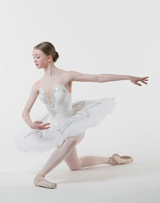
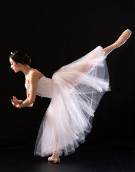
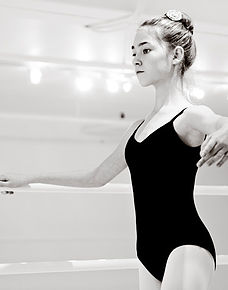
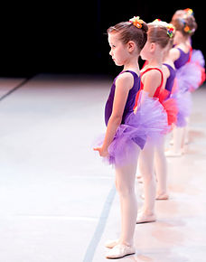

Professional Training and Post Graduate Program
The Professional Training and Post Graduate Program is for the serious/full-time dancer aged 10 to 22 who is training to improve technical ability and artistic performance. This program offers young dancers the opportunity to showcase themselves as part of a Corps de Ballet and as a Soloist. An audition is required to evaluate physical, mental and emotional attributes needed for classical ballet together with a healthly medical history. All professional students are required to take an ISTD ballet exam every year and offered the opportunity to participate in provincial, national and international competitions. It is essential that students and parents are fully committed to the teaching and guidance of the program in order to maintain its integrity.
This intense training program prepares boys and girls for a professional career in dance.

ISTD Imperial Classical Ballet
The roots of Imperial Classical Ballet stem from the early days of the ISTD and the first written syllabus in 1913 which was based on the teaching of the French School from the Paris Opéra. The syllabus has now evolved to promote the English classical style and addresses the changing needs of Ballet dancers today. Students in both the Professional and Foundation training programs are encouraged to take an examination once a year.
ISTD Graded & Vocational exams are recognized internationally and acknowledged by the BC Ministry of Education, with Vocational certification awarding school credits.

Foundation Training Program
The Foundation Training Program is for the amateur/part-time dancer aged 7-12yrs who loves to dance and wants to work on poise, posture, and discipline together with technique, musicality, and artistry. A minimum of twice a week is required and students (if ready) are encouraged to enter an ISTD ballet exam each year. This program is designed to train young boys and girls to a higher level of ability, offering them the opportunity to audition for the Professional Training Program.
Foundation students will participate in the year-end presentation on stage.

Pre-Ballet Program
Children aged 3-6yrs attend classes once or twice a week. Our young ballerina program encourages age appropriate creativity, musicality, and physicality. Children gain confidence, poise, and a solid frame work on which to build classical ballet technique.
The program offers boys and girls the opportunity to present informal in-house performances for their parents each term.